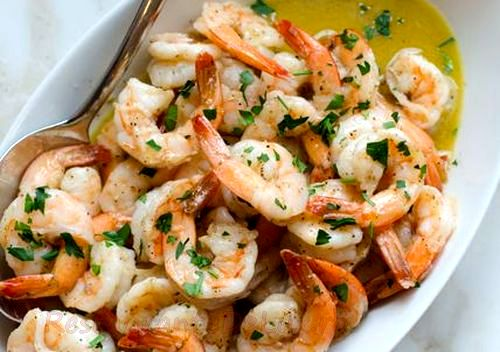

Creveti prajiti in unt si usturoi
Ingrediente
- 10-15 creveti
- 50 g de unt
- 3 catei de usturoi
- 1/2 lamaie(zeama de la aceasta)
- sare si piper dupa gust
Mod de preparare: Pentru foarte multe ţări, creveţii prezintă cele mai consumate şi apreciate fructe de mare. Se consumă ca aperitive, salate, supe, feluri principale şi chiar şi cu pizza. Şi dacă ieri, am făcut o delicioasă supă thailandeză Tom Yum, pe care am devorat-o împreună cu Cristi, azi dimineaţă, m-am folosit de prilejul că mi-au rămas creveţi proaspeţi nefolosiţi ieri şi am pregătit un delicios preparat, foarte uşor de gătit şi foarte aromat - mai ales pentru cei ce adoră aroma usturoiului gătit - pe post de mic dejun: creveţi prăjiţi în unt cu usturoi! După cum deja ştiţi, mai întâi curăţăm creveţii: îi decorticăm (până la codiţă sau în întregime), scoatem vena neagră de pe spatele crevetelui şi-i spălăm. Încingem o tigaie şi adăugăm untul. Lăsăm să se topească şi îl lăsăm la încins până nu mai spumegă. Zdrobim usturoiul cu lama cuţitului şi îl adăugăm în untul încins. Când aroma acestuia te învăluie, punem şi creveţii în tigaie. Îi prăjim până se fac rozali (nu mai mult de 4-5 minute, pentru că se vor întări). Adăugăm zeama de la limetă şi asezonăm. Scoatem creveţii din tigaie şi-i punem în farfurie. Turnăm sosul de unt şi limetă peste ei (pentru cei ce preferă pătrunjelul, pot orna preparatul cu pătrunjel tocat).
